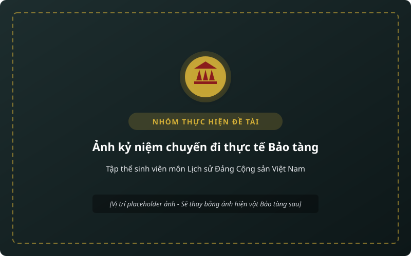

TIẾN TRÌNH LỊCH SỬ & ĐƯỜNG LỐI
Khám phá 5 giai đoạn lịch sử hào hùng
Sử dụng thanh timeline ở dưới hoặc nút điều hướng để chuyển qua các giai đoạn từ 1954 đến 1975.

Minh chứng từ Bảo tàng
Các chứng tích tại Bảo tàng phản ánh chân thực bối cảnh ác liệt và sự hà khắc của chính quyền tay sai.
📌 Điểm cốt lõi cần nắm vững
KHO TƯ LIỆU TRỰC QUAN
Chứng tích Lịch sử tại Bảo tàng Chứng tích Chiến tranh
Tổng hợp hình ảnh hiện vật, chứng tích và tài liệu khảo sát tại số 28 Võ Văn Tần, Phường Võ Thị Sáu, Quận 3, TP.HCM.
ÔN TẬP TƯƠNG TÁC
Trắc nghiệm kiến thức Lịch sử Đảng (1954 - 1975)
Thử tài ghi nhớ các nghị quyết mang tính bước ngoặt và chiến thắng tiêu biểu qua 12 câu đố vui có giải thích chi tiết.
Thời kỳ: 1954 - 1960
Câu hỏi đang tải...
💡 Giải thích lịch sử:
Nội dung giải thích...
🏆
Hoàn thành bài ôn tập!
0 / 12
Phản hồi kết quả...
ĐÁNH GIÁ TOÀN DIỆN
Ý nghĩa lịch sử & Bài học kinh nghiệm
Tổng hợp sự lãnh đạo tài tình của Đảng Cộng sản Việt Nam và giá trị thời đại (Phụ trách: Quang).
ĐỘI NGŨ THỰC HIỆN
Nhóm Sinh viên môn Lịch sử Đảng
Bảng phân công nhiệm vụ và sự đóng góp của các thành viên trong đề tài.
